ALL DETAIL SIGNATURE 01
올디테일
팔자지우개
맞춤형 디자인으로
팔자주름을 확실하게 지웁니다.
말로 설명하지 않겠습니다.
직접 눈으로 확인하세요.
FIG A. BEFORE & AFTER
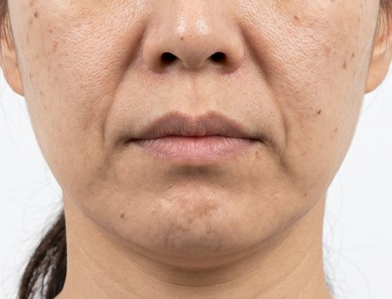
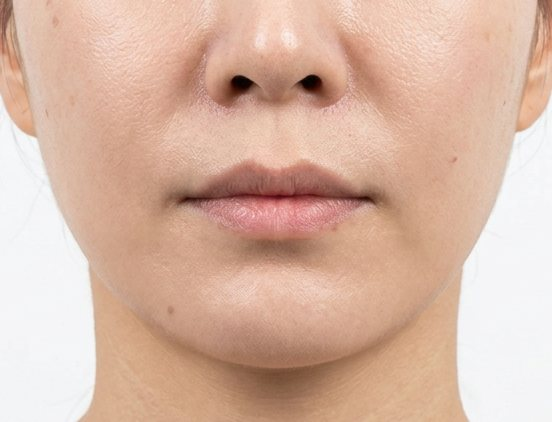
효과 없는 콜라겐 부스터를
언제까지 반복하시겠습니까?
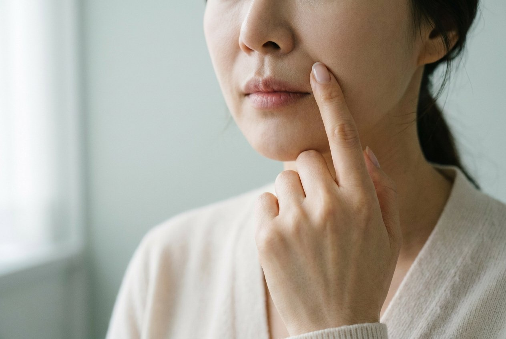
팔자주름은 피부 표면의 문제가 아닙니다. 표면에만 작용하는 시술을 반복하면 비용과 시간만 쌓입니다. 구조를 보지 않은 시술은 구조를 바꾸지 못합니다.
설계 없이 채우면
입이 나와 보일 수 있습니다.
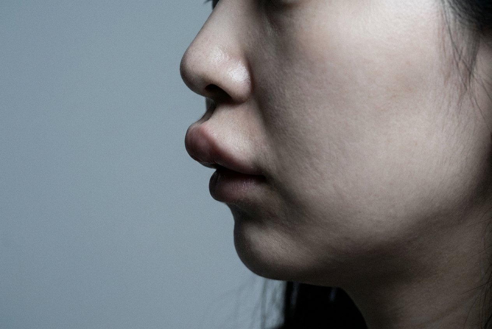
주입 위치와 층이 정확하지 않으면 필러가 자리를 잡지 못하고 이동합니다. 그 결과 인중이 길어 보이거나 입 주변이 앞으로 나와 보이는 형태로 이어질 수 있습니다.
FIG B. WHY IT HAPPENS
팔자주름을 유형별로 분석해
디자인하지 않았기 때문입니다.
FIG C. THREE TYPES
꺼짐형
CASE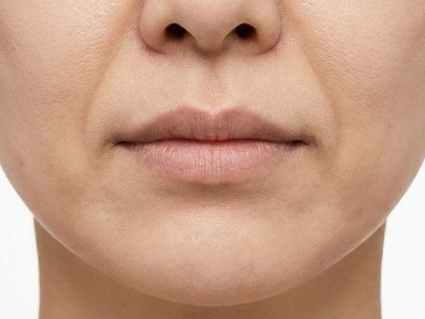
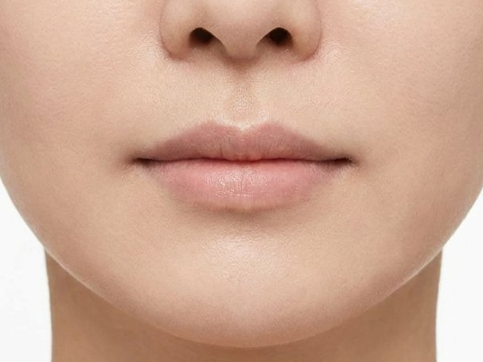
코 옆 꺼진 부분을 필러로 채웁니다. Ristow space를 정확히 타겟해 이동을 막습니다.
볼살형
CASE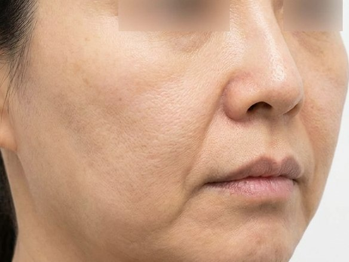
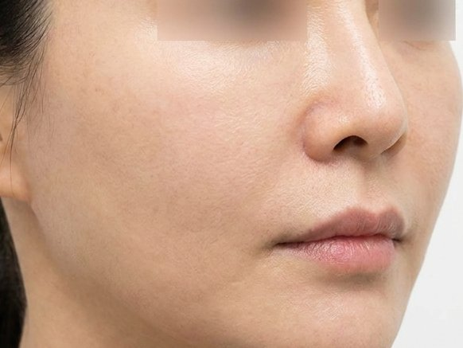
울쎄라와 온다로 팔자 위 볼살의 지방과 부피를 줄입니다.
처짐형
CASE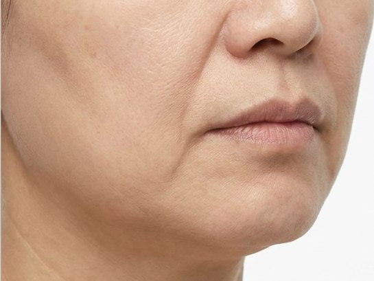
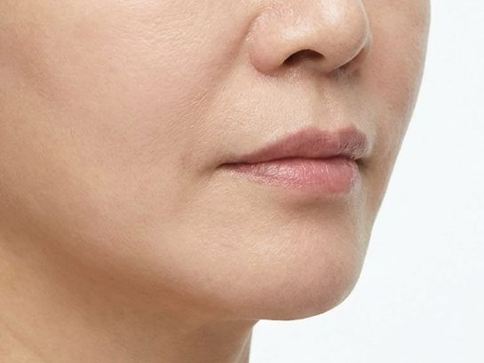
리버스 디자인 실리프팅으로 처진 볼살을 딤플 없이 당깁니다.
대부분 한 가지 유형으로만 분류되지 않습니다. 세 가지 원인의 비중을 진단으로 확인한 뒤, 그 비중에 맞춰 맞춤형으로 설계합니다.
FIG D. COMPARISON
FIG E. PROTOCOL · 진료 여정
3D 진단
지방층 두께와 처짐 방향, 좌우 비대칭을 수치로 확인합니다. 세 가지 원인의 비중이 여기서 정해집니다.
실장 상담 → 원장 상담
유형 비중을 판정하고 필요한 시술과 필요하지 않은 시술을 구분합니다.
사전 펜 디자인
앉은 자세에서 웃고 말하는 표정을 확인하며 진입 지점과 고정 지점을 그립니다.
다단계 마취
연고 마취 후 충분히 기다리고, 필요한 부위에는 국소 마취를 더합니다.
조합 시술
설계한 순서대로 진행합니다. 층을 나누어 배분하고 한곳에 뭉치지 않게 양을 쪼갭니다.
2주 후 재평가
자리를 잡은 상태에서 다시 봅니다. 필요하면 미세 조정합니다.
FIG F. COMPOSITION · 프로그램 구성
필러
Ristow space에 정확히 주입해 꺼진 부위를 채우고, 자리를 잡아 이동을 막습니다.
울쎄라
4.5mm 근막층을 당겨 팔자 위 볼살을 끌어올리고 지방층을 함께 정리합니다.
온다
0–7mm 깊이까지 에너지를 전달해 팔자 위 볼살의 지방을 줄입니다.
실리프팅
리버스 디자인으로 진입 방향을 달리해, 딤플 없이 팔자 위 볼살을 당깁니다.
※ 진단 결과에 따라 필요한 요소만 선택해 조합합니다. 모든 요소를 항상 함께 사용하지는 않습니다.
FIG G. RECOVERY · 회복 경과
당일
미세한 부기, 기초 화장 가능
2–3일
멍이 생긴 경우 옅어지기 시작
1–2주
필러가 자리를 잡으며 경계가 자연스러워짐
2주
경과 확인 및 미세 조정
FIG H. CAUTIONS · 주의사항
— 시술 후 1주간 사우나 · 격한 운동 · 과도한 얼굴 마사지는 피해주세요.
— 항응고제 복용 중, 임신 · 수유 중, 시술 부위에 감염이 있는 경우 시술이 제한될 수 있습니다.
— 일시적인 부기 · 멍 · 좌우 비대칭이 나타날 수 있으며 대부분 자연 회복됩니다.
— 결과와 유지 기간은 개인의 피부 상태와 생활 습관에 따라 달라집니다.
FIG I. FAQ · 자주 묻는 질문
Q필러만 넣으면 안 되나요?+
유형에 따라 다릅니다. 볼살형에 볼륨만 늘리면 무게가 늘어 오히려 더 처질 수 있습니다. 진단에서 유형 비중을 먼저 나누는 이유입니다.
Q이전에 넣은 필러가 남아 있어도 되나요?+
잔여 필러의 위치와 양을 확인한 뒤 설계합니다. 위치가 어긋나 있으면 정리 후 진행하는 편이 안전합니다.
Q실리프팅을 하면 볼에 딤플이 생기지 않나요?+
진입 방향과 고정 지점을 달리한 리버스 디자인으로 진행합니다. 설계 없이 당기는 경우에 딤플 위험이 커집니다.
Q얼마나 유지되나요?+
사용 제품과 개인 대사에 따라 다릅니다. 상담 시 예상 유지 기간과 재시술 시점을 함께 안내드립니다.

ALL DETAIL SIGNATURE 02
올디테일
리프팅
맞춤형 디자인으로,
편안하게 올립니다.
말로 설명하지 않겠습니다.
직접 눈으로 확인하세요.
FIG A. BEFORE & AFTER
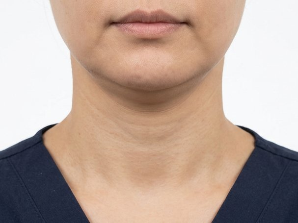
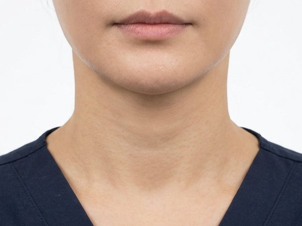
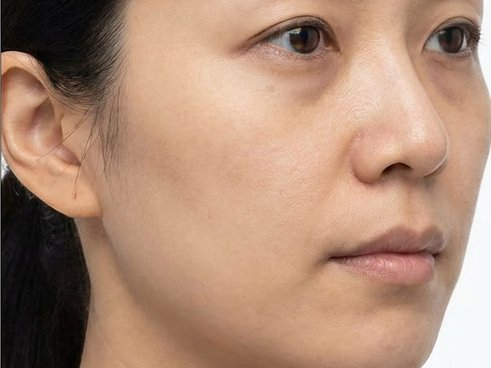
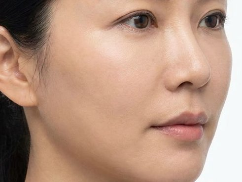
디자인 없이 눕자마자 시작하는 시술을
언제까지 받으시겠습니까?
누운 상태에서는 얼굴의 무게가 뒤로 이동해 처짐이 실제보다 덜 보입니다. 그 상태에서 바로 조사를 시작하면, 당겨야 할 곳과 피해야 할 곳의 경계가 사라집니다.
이뻐지려고 온 피부과가
통증 트라우마로 남아야 합니까?
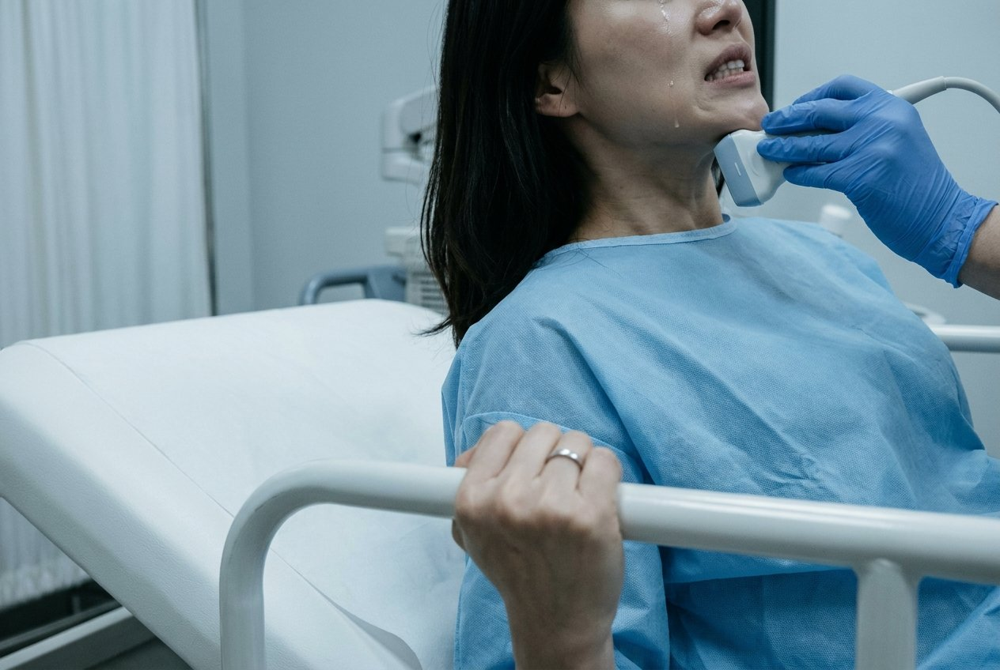
통증은 참으면 되는 문제가 아닙니다. 아픈 상태에서는 환자가 움직이게 되고, 시술자는 필요한 에너지를 충분히 쓰지 못합니다. 결국 통증 관리가 결과의 정밀도를 결정합니다.
FIG B. WHY IT HAPPENS
디자인을 디테일하게 하지 않고,
마취를 디테일하게 하지 않았기 때문입니다.
FIG C. THREE DETAILS
올디테일 상담
CONSULTING3D 진단 데이터를 원장이 직접 판독하고, 얼굴 조건에 맞는 장비 조합과 샷수 배분을 제안합니다. 필요하지 않은 장비는 넣지 않습니다.
원장 직접 상담조합 · 샷수 설계
올디테일 디자인
DESIGN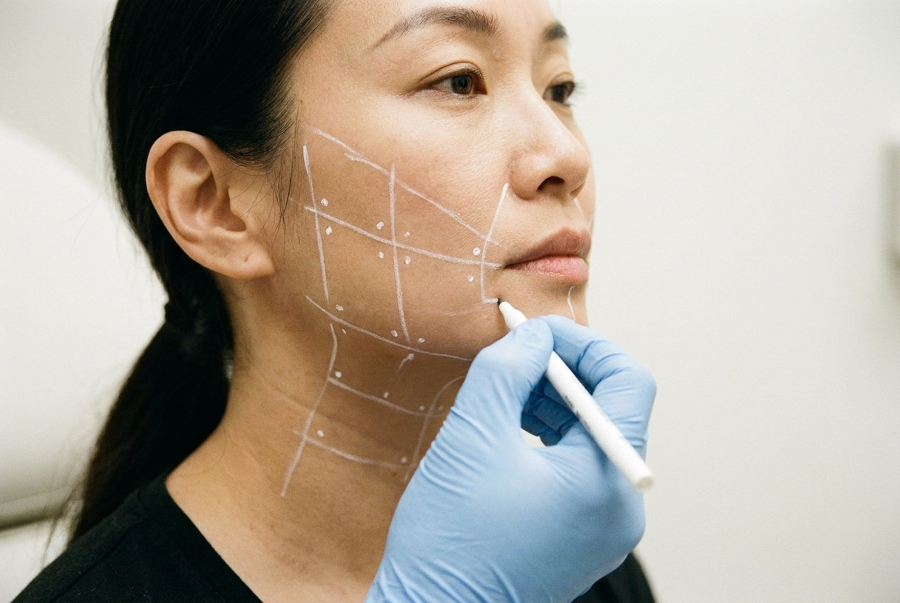
앉은 자세에서 표정을 움직여보며 얼굴 위에 직접 선을 그립니다. 당겨 올릴 지점과 볼 패임이 우려되어 피해야 할 구역을 나눕니다.
앉은 자세 계측구역별 격자 설계
올디테일 마취
COMFORT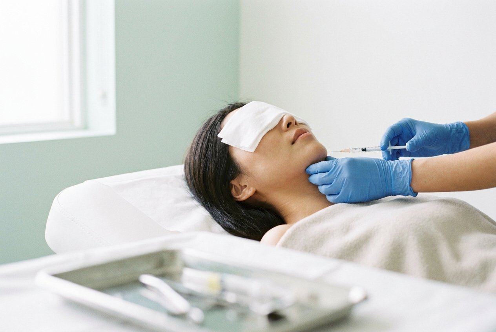
고농도 연고로 표면을, 타겟 부위 신경 마취로 심부를 차단하고 필요에 따라 냉각을 더합니다. 약효가 완전히 오를 때까지 기다린 뒤 첫 샷을 시작합니다.
연고 · 신경 · 냉각30분 이상 대기
Design & Comfort 올디테일은 디자인과 마취의 디테일에 집착합니다.
FIG D. EQUIPMENT
리프팅은 장비가 반입니다.
올디테일은 각 분야를 대표하는 장비만 갖췄습니다. 장비가 좋아야 설계한 대로 에너지를 전달할 수 있습니다.
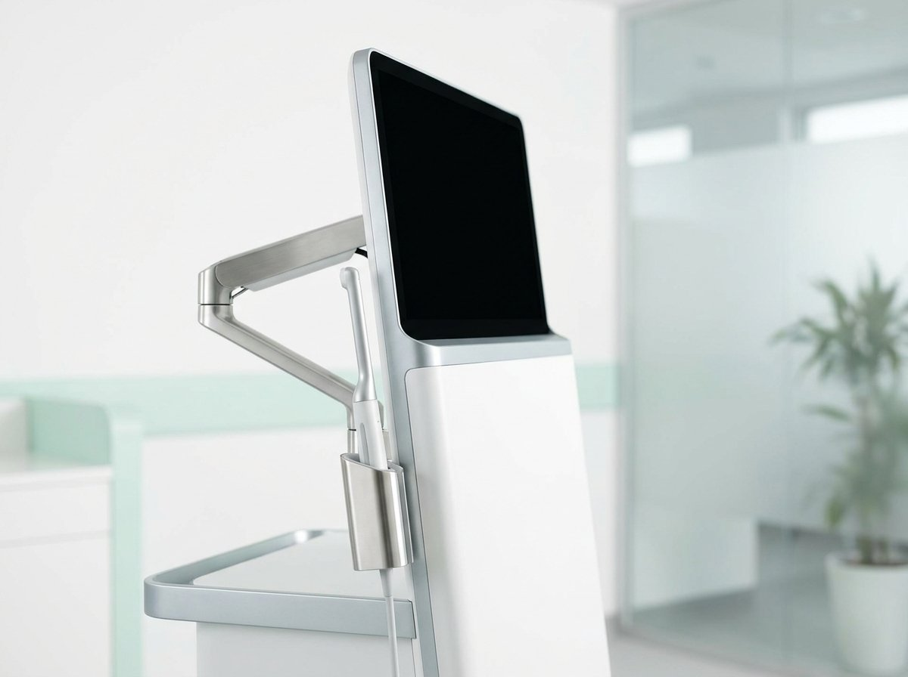
울쎄라피 프라임
독일 Merz근막층(SMAS)을 정밀하게 타겟해 리프팅의 방향을 만듭니다.
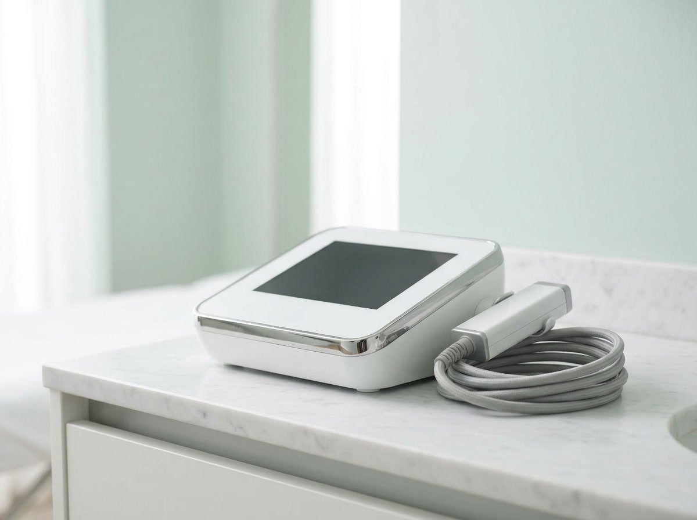
써마지 FLX
미국 Solta표면 콜라겐을 넓은 면적에서 고르게 조여 결과 탄력을 정리합니다.
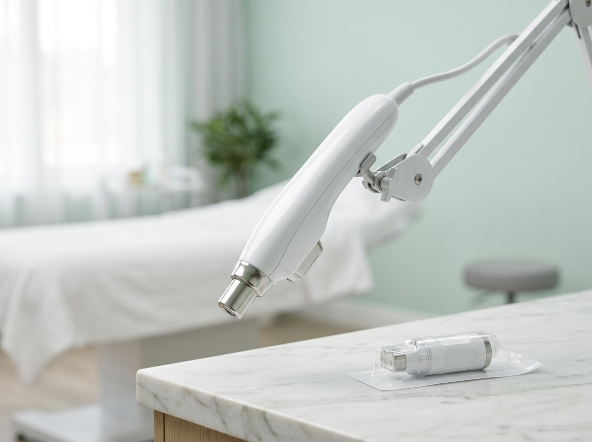
셰르프
미국 Cynosure깊이를 세분해 조사하며, 지방층이 얇은 구역에서도 강도를 조절할 수 있습니다.
※ 장비 이미지는 공식 제품 사진으로 교체 예정입니다. 보유 장비와 모델명은 내원 시 확인하실 수 있습니다.
FIG E. COMPARISON
FIG F. PROTOCOL · 진료 여정
3D 진단
지방 두께와 탄력, 처짐 방향을 구역별로 계측합니다. 같은 얼굴 안에서도 구역마다 조건이 다릅니다.
원장 상담
필요한 장비와 필요하지 않은 장비를 구분합니다. 모든 장비를 다 쓰는 것이 좋은 것은 아닙니다.
사전 펜 디자인
앉은 자세에서 구역별 격자를 그립니다. 누운 상태에서는 얼굴의 무게가 달라지기 때문입니다.
4단계 마취
연고 → 신경 → 냉각 순으로 쌓고, 약효가 완전히 오를 때까지 30분 이상 기다립니다.
조합 시술
구역마다 깊이와 강도를 다르게 조사합니다. 볼 패임이 우려되는 구역은 강도를 낮추거나 피합니다.
진정 관리 · 경과 확인
시술 직후 진정 관리를 하고, 콜라겐 재생 경과를 볼 일정을 함께 잡습니다.
FIG G. COMPOSITION · 구성 및 비용
울쎄라 · 셰르프
근막층(SMAS)을 타겟해 당겨 올립니다. 리프팅의 방향을 만드는 축입니다.
써마지 · 온다
표면 콜라겐을 조여 결과 탄력을 정리합니다.
실리프팅
하강 방향을 물리적으로 보정합니다. 필요한 경우에만 병행합니다.
진정 관리
시술 직후 열감과 붉음을 낮춥니다. 모든 조합에 포함됩니다.
비용
장비 조합과 조사 범위에 따라 달라지므로 상담 후 안내드립니다.
※ 진단 결과에 따라 필요한 조합만 선택합니다. 모든 장비를 항상 함께 사용하지는 않습니다.
FIG H. RECOVERY · 회복 경과
당일
열감과 얼얼함, 진정 관리 후 귀가
2–3일
근육통과 비슷한 뻐근함
2–4주
콜라겐 재생이 시작되며 탄력 변화
2–3개월
최종 결과를 확인하는 시점
FIG I. CAUTIONS · 주의사항
— 시술 후 1주간 사우나 · 찜질방 · 강한 자극은 피해주세요.
— 임신 · 수유 중, 심장 박동기 또는 금속 삽입물이 있는 경우, 시술 부위에 염증이 있는 경우 제한될 수 있습니다.
— 일시적인 붉음 · 부기 · 얼얼함이 나타날 수 있습니다.
— 지방층이 얇은 경우 볼 꺼짐을 피하기 위해 강도와 구역을 조정하며, 이 판단은 진단 후 원장이 직접 합니다.
FIG J. FAQ · 자주 묻는 질문
Q몇 샷을 해주시나요?+
총량보다 분포가 결과를 만듭니다. 진단 후 구역별 배분을 설명드리고 필요한 총량을 함께 정합니다.
Q정말 안 아픈가요?+
통증을 0으로 만들 수는 없습니다. 다만 마취 단계를 쌓고 충분히 기다리면 견딜 수 있는 수준까지 낮아집니다.
Q볼이 꺼질까 걱정됩니다.+
지방층이 얇은 구역은 진단에서 먼저 확인하고, 강도를 낮추거나 조사 구역에서 제외합니다. 사전 펜 디자인이 이 판단을 남기기 위한 단계입니다.
Q원장님을 시술 전에 만날 수 있나요?+
네. 실장 상담 후 원장이 3D 데이터를 직접 확인하고 설계를 확정한 뒤에 시술이 시작됩니다.
Q얼마나 자주 받아야 하나요?+
장비와 개인 상태에 따라 다릅니다. 대개 6개월–1년 주기로 계획하며 상담 시 안내드립니다.

ALL DETAIL SIGNATURE 03
컴포트
스킨부스터
올디테일 마취 시스템으로,
편안하게 맞습니다.
말로 설명하지 않겠습니다.
직접 눈으로 확인하세요.
FIG A. DURING TREATMENT
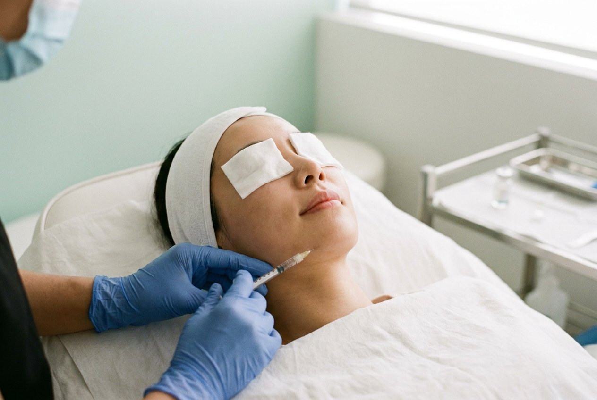
※ 시술 중 촬영 영상으로 교체 예정입니다. 통증 반응은 개인차가 있습니다.
VIEW MORE +이뻐지려고 온 피부과가
통증 트라우마로 남아야 합니까?
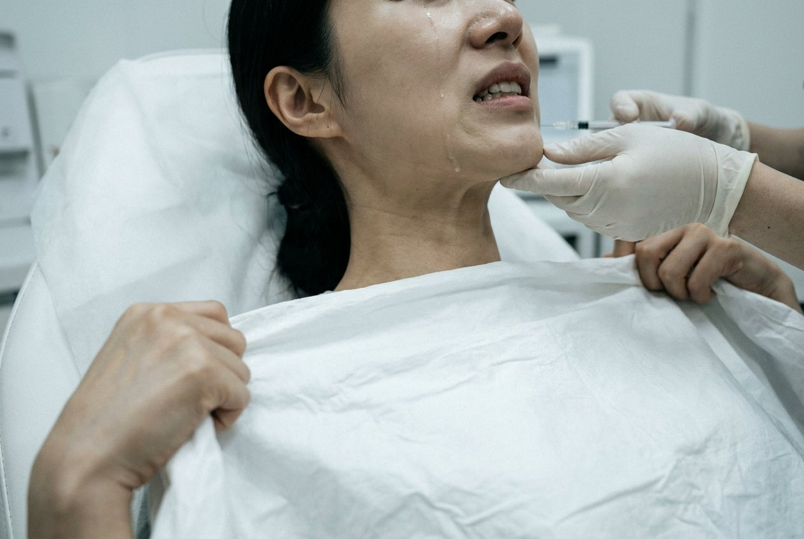
참으면서 받은 시술은 다음 예약을 어렵게 만듭니다. 스킨부스터는 회차를 쌓아야 결과가 나오는 시술이라, 통증 관리가 곧 완주 가능성입니다.
나에게 맞는 조합,
제대로 진단받고 권유받으셨습니까?
재생 · 볼륨 · 광채 · 모공은 서로 다른 축입니다. 네 가지를 모두 넣는 것이 좋은 것이 아니라, 지금 내 피부에 필요한 축만 고르는 것이 좋습니다.
FIG B. WHY IT HAPPENS
시간을 아끼려고
마취를 디테일하게 하지 않았기 때문입니다.
FIG C. FOUR-STEP ANAESTHESIA
빈틈 없는 도포
STEP 01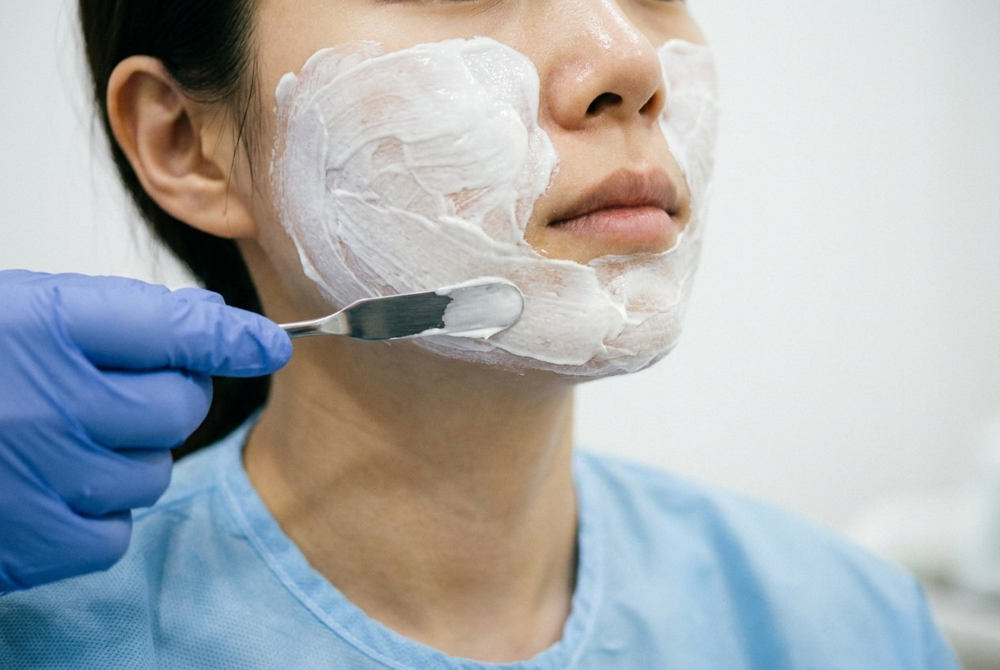
시술 부위의 피부가 보이지 않을 만큼 마취크림을 덮습니다. 눈가와 경계 부위를 남기지 않습니다.
전 부위 도포
최소 45분의 대기
STEP 02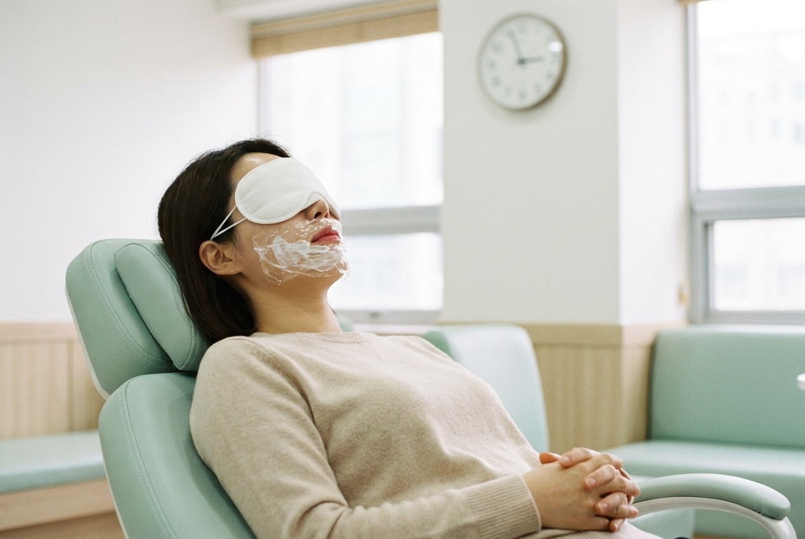
연고를 바르는 것과 약효가 오르는 것은 다른 일입니다. 각질층을 통과해 신경 말단에 도달할 시간을 확보합니다.
45분 이상 대기
시술 전 신경 마취
STEP 03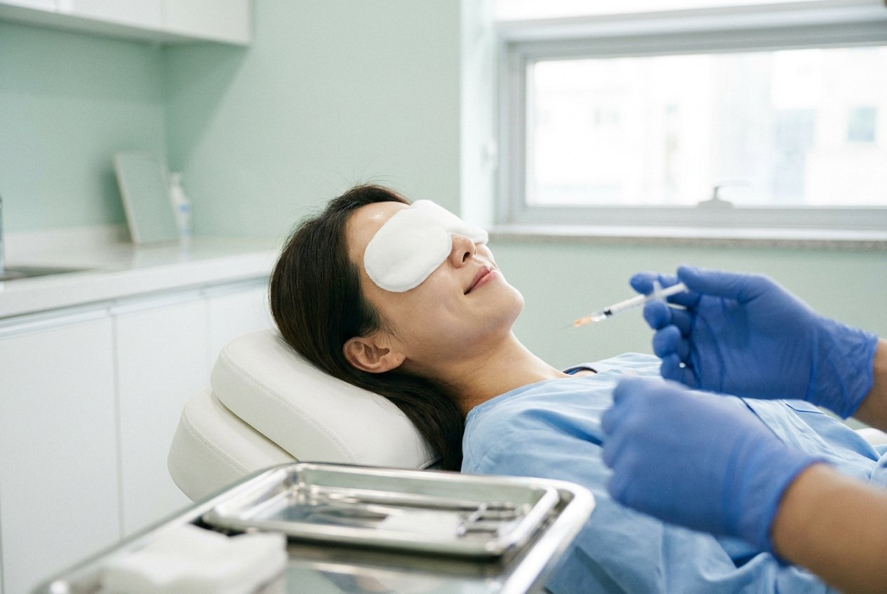
표면 마취만으로 부족한 부위에는 주사로 심부 통증 경로를 차단합니다. 한 가지 방법으로 모든 경로를 막을 수 없습니다.
타겟 부위 차단
주입 직전 냉각
STEP 04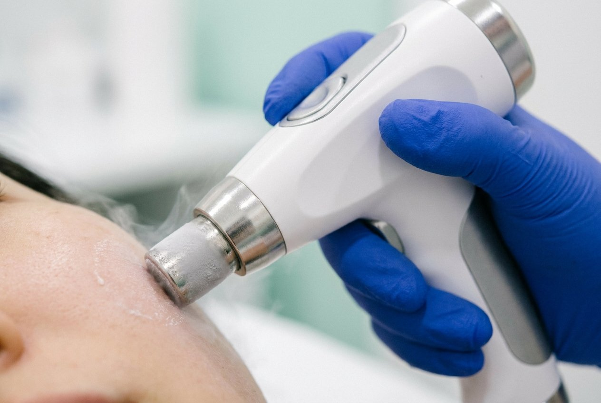
엑스인젝터가 주입하는 순간 접촉면을 냉각합니다. 바늘이 들어가는 감각 자체를 낮춥니다.
인젝터 냉각
Design & Comfort 올디테일 마취 시스템은 디테일에 집착합니다.
FIG D. COMPARISON
FIG E. PROTOCOL · 진료 여정
3D 진단
피부 두께 · 수분도 · 탄력도를 수치로 확인합니다. 느낌이 아니라 데이터로 시작합니다.
원장 상담
재생 · 볼륨 · 광채 · 모공 네 축 중 지금 필요한 축만 고릅니다. 필요하지 않은 성분은 비용과 회복 시간만 늘립니다.
4단계 마취
전 부위 도포 → 45분 대기 → 필요 부위 신경 마취 → 주입 직전 냉각 순으로 쌓습니다.
엑스인젝터 주입
압력을 일정하게 유지해 같은 깊이 · 같은 양으로 들어갑니다. 예측이 가능해집니다.
엑소좀 진정 관리
주입 직후 자극을 낮춰 붉음과 부기를 줄입니다.
홈케어 · 회차 계획
귀가 시 홈케어 키트를 드리고 다음 회차 간격을 정합니다.
FIG F. COMPOSITION · 구성 및 비용
리쥬란
손상된 피부의 재생 축을 담당합니다.
쥬베룩 스킨
결과 탄력을 정리합니다.
리투오
광채와 수분 보유력을 올립니다.
스킨보톡스
모공과 피지를 조절합니다.
엑소좀 진정 관리
주입 직후 자극을 낮춥니다. 모든 조합에 포함됩니다.
비용
성분 조합과 회차, 시술 범위에 따라 달라지므로 상담 후 안내드립니다.
※ 진단 결과에 따라 필요한 축만 선택해 조합합니다. 모든 성분을 항상 함께 사용하지는 않습니다.
FIG G. RECOVERY · 회복 경과
당일
미세한 붓기와 붉음, 진정 관리 후 귀가
다음날
대부분 화장 가능
3–5일
주입 흔적과 엠보싱이 옅어짐
2–4주
결과가 올라오는 시점, 회차 간격 조정
FIG H. CAUTIONS · 주의사항
— 시술 후 24시간 사우나 · 수영 · 음주는 피해주세요.
— 임신 · 수유 중, 켈로이드 체질, 시술 부위에 감염이 있는 경우 시술이 제한될 수 있습니다.
— 일시적인 엠보싱 · 붉음 · 멍이 나타날 수 있으며 대부분 며칠 내 회복됩니다.
— 국소 마취제에 과민 반응 이력이 있는 경우 상담 시 반드시 알려주세요.
— 여러 성분을 동시에 넣는 것이 항상 더 좋은 결과를 뜻하지는 않습니다.
FIG I. FAQ · 자주 묻는 질문
Q정말 안 아픈가요?+
통증을 0으로 만들 수는 없습니다. 다만 도포 · 대기 · 신경 마취 · 냉각을 모두 거치면 견딜 수 있는 수준까지 낮아집니다.
Q눈가도 마취해주시나요?+
네. 시술 부위 전체를 빈틈 없이 도포합니다. 예민한 부위를 빼고 도포하지 않습니다.
Q대기 시간이 길면 오래 걸리지 않나요?+
전체 진료 시간은 길어집니다. 다만 그 45분이 통증을 결정하기 때문에 줄이지 않습니다.
Q엠보싱은 얼마나 남나요?+
주입 깊이와 양에 따라 다릅니다. 인젝터로 균일하게 넣으면 예측 가능한 범위로 관리되며, 대개 3–5일 내 옅어집니다.
Q어떤 성분이 제일 좋나요?+
성분보다 내 피부의 어느 층에 어떻게 들어가는지가 결과를 바꿉니다. 진단 후 필요한 축만 고릅니다.

ALL DETAIL SIGNATURE 04
커스텀
색소지우개
나에게 맞는 계획으로,
색소를 지웁니다.
말로 설명하지 않겠습니다.
직접 눈으로 확인하세요.
FIG A. BEFORE & AFTER
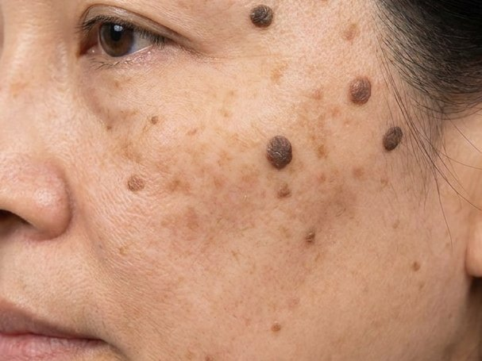
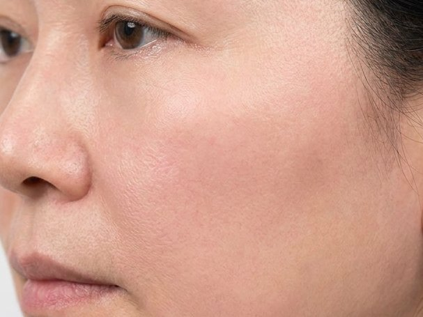
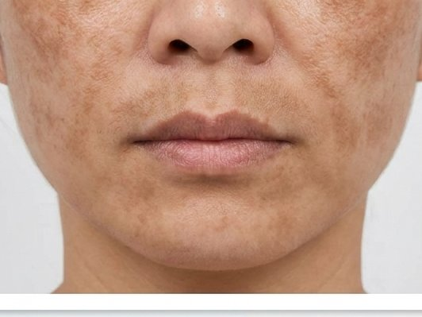
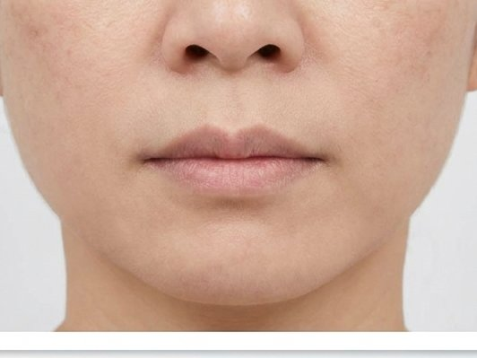
언제까지 시간과 돈을 흘리며
레이저 유목민으로 지내시겠습니까?
계획 없이 병원을 옮겨가며 회차만 쌓으면, 어떤 세팅이 내 피부에 맞았는지 기록이 남지 않습니다. 색소 치료는 회차보다 계획의 정확도가 결과를 만듭니다.
색소만 깨는 것이 아니라
콜라겐 생성을 함께 해야 합니다.
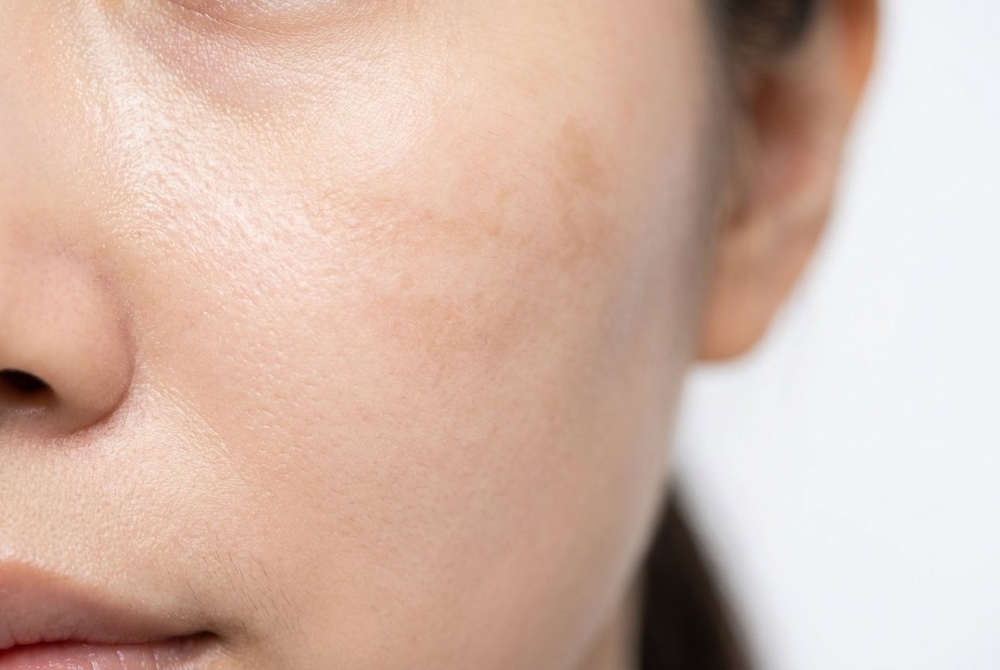
색소를 걷어내도 피부가 약한 상태로 남으면 자극에 다시 반응합니다. 재생을 함께 다뤄야 재발 부담을 낮출 수 있습니다.
오래 방치된 색소는
치료 후에도 재발 부담이 큽니다.
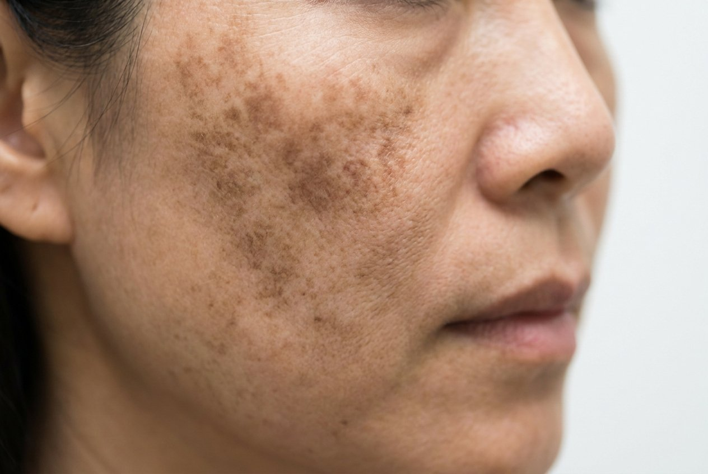
진피까지 내려간 색소와 오래 자리 잡은 기미는 한 번에 정리되지 않습니다. 몇 회에 끝난다는 약속 대신, 유지 관리를 포함한 계획을 세우는 이유입니다.
FIG B. WHY IT HAPPENS
나에게 맞는 색소 치료 계획을
세우지 않았기 때문입니다.
FIG C. FOUR PILLARS
올디테일 주치의 제도
DOCTOR색소를 전담하는 주치의를 배정합니다. 회차마다 담당이 바뀌면 직전 반응을 반영할 수 없습니다.
전담 주치의회차 기록 관리
커스텀 계획 디자인
PLANNING색소의 깊이와 분포, 혈관성 요소를 진단으로 확인하고 회차별 계획을 먼저 세운 뒤 시작합니다.
정밀 진단회차 계획 수립
올디테일 마취 시스템
COMFORT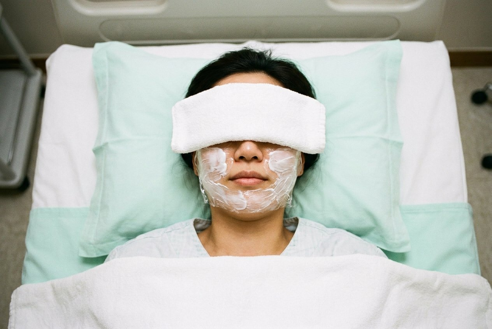
얼굴 전체 조사에서 통증 차이가 큽니다. 도포 후 최소 45분을 기다린 뒤 시작합니다.
45분 이상 대기
세기 조절 시술
TUNING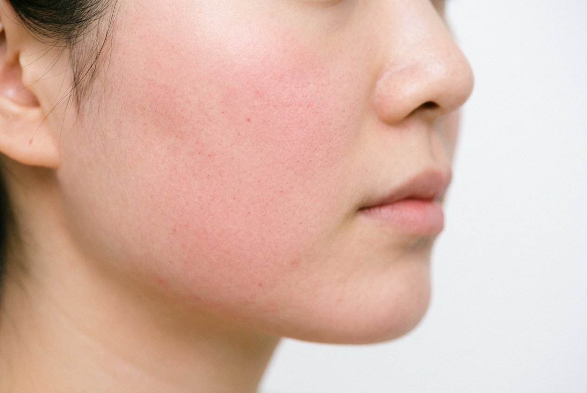
지연성 홍반 등 직전 회차의 반응과 회복 속도를 확인하고 파장과 에너지를 다시 정합니다.
회차별 재조정
색소는 사람마다 접근이 다르고
꾸준한 관리가 필요합니다.
커스텀 색소지우개는 당신만을 위한 계획에 집착합니다.
FIG D. EQUIPMENT
색소 치료에서 장비는 절반입니다.
색소의 성질에 따라 써야 할 파장이 다릅니다. 필요한 파장을 고를 수 있어야 계획대로 진행할 수 있습니다.
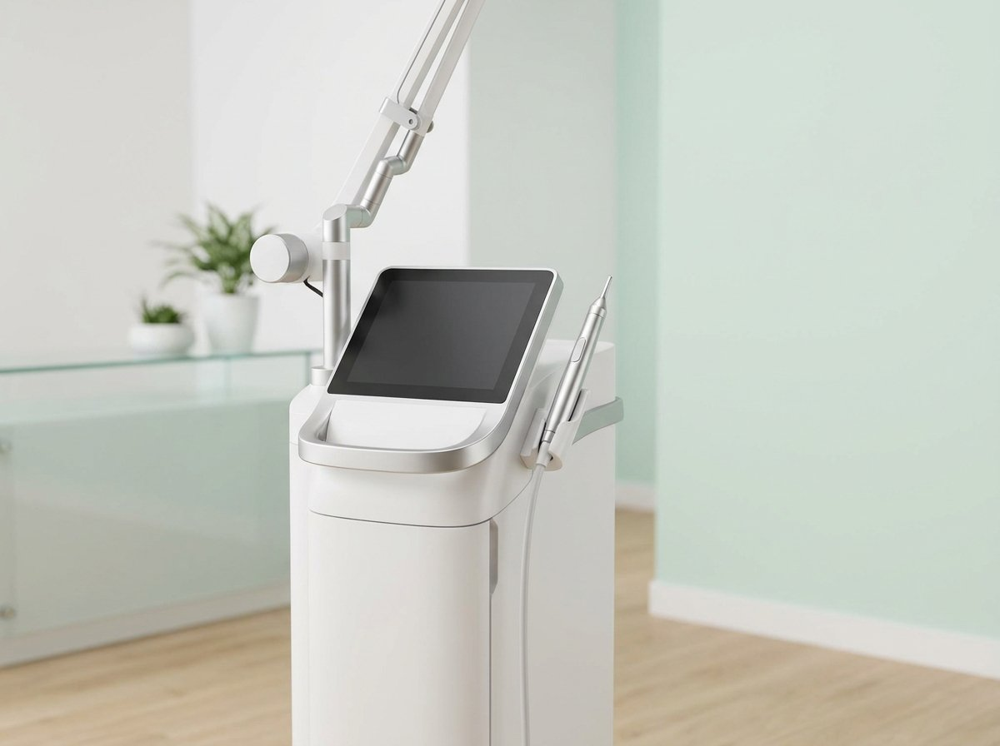
피코슈어
미국 Cynosure피코초 단위로 색소를 잘게 나눕니다. 열 부담을 낮춰 진한 색소에 접근합니다.
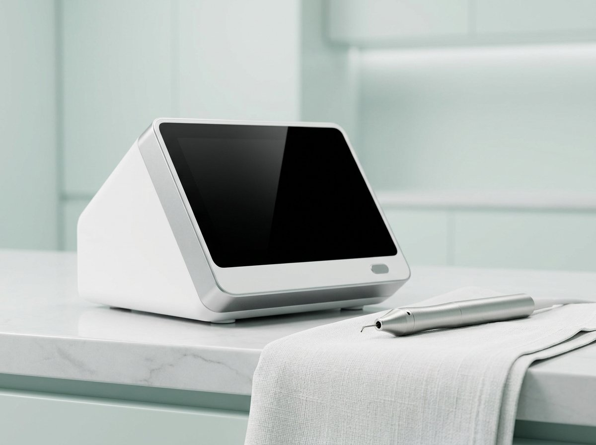
스타워커
유럽 Fotona파장과 펄스를 세분해 표피형과 진피형을 나누어 다룹니다.
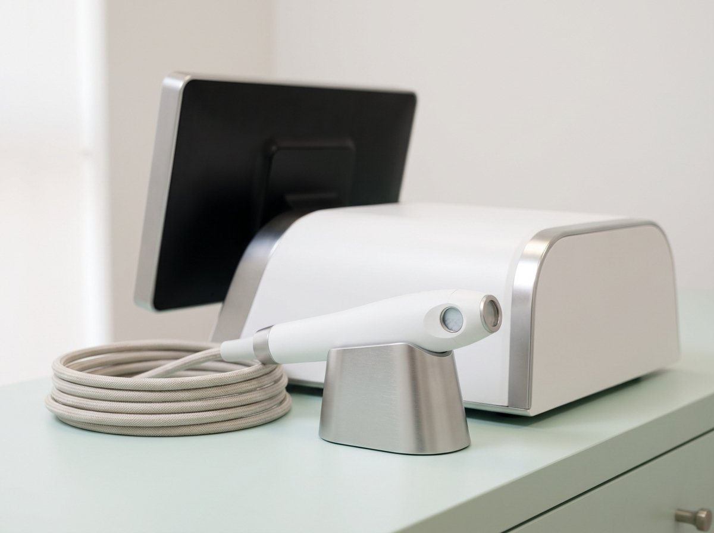
엑셀브이
미국 Cutera혈관성 요소와 홍조를 함께 봅니다. 기미에 섞인 혈관 성분에 접근합니다.
※ 장비 이미지는 공식 제품 사진으로 교체 예정입니다. 보유 장비와 모델명은 내원 시 확인하실 수 있습니다.
FIG E. COMPARISON
FIG F. PROTOCOL · 진료 여정
정밀 진단
육안으로 구분되지 않는 색소의 깊이와 분포, 혈관성 요소를 확인합니다.
주치의 배정 · 계획 수립
색소 전담 주치의가 회차 계획과 예상 경과를 먼저 설명드립니다.
마취 · 대기
연고를 도포하고 최소 45분 기다린 뒤 시작합니다.
파장 크로스 시술
진한 색소, 흐린 색소, 혈관성 요소에 필요한 파장만 구역별로 나누어 적용합니다.
재생 · 진정 관리
색소를 걷어낸 자리의 재생을 함께 다뤄 재발 부담을 낮춥니다.
회차 재평가
1 · 5 · 10회차에는 주치의와 함께 계획 전체를 다시 점검합니다.
FIG G. COMPOSITION · 구성 및 비용
저출력 토닝
표피 · 진피의 넓은 색소를 여러 회차에 걸쳐 나누어 걷어냅니다.
선택 조사 레이저
진한 잡티와 검버섯을 국소적으로 다룹니다.
혈관 레이저
혈관성 요소와 홍조를 함께 봅니다.
재생 관리
색소를 걷어낸 자리의 회복과 콜라겐 생성을 돕습니다.
미백 관리 · 홈케어
회차 사이의 재발을 관리합니다.
비용
색소의 종류와 범위, 회차 계획에 따라 달라지므로 상담 후 안내드립니다.
※ 진단 결과에 따라 필요한 요소만 선택해 조합합니다. 모든 장비를 항상 함께 사용하지는 않습니다.
FIG H. RECOVERY · 회복 경과
당일
붉음과 미세한 열감
2–3일
딱지가 생긴 경우 자연 탈락 (긁지 않기)
1–2주
색소가 옅어지기 시작
4주 전후
반응을 확인하고 다음 회차 세팅 조정
FIG I. CAUTIONS · 주의사항
— 시술 후 4주간 강한 자외선 노출을 피하고 자외선 차단제를 매일 사용해주세요.
— 임신 · 수유 중, 광감작 약물 복용 중, 최근 태닝 이력이 있는 경우 시술이 제한될 수 있습니다.
— 일시적인 붉음 · 지연성 홍반 · 색소 침착이 나타날 수 있습니다.
— 기미는 열에 예민해 낮은 에너지로 나누어 접근합니다. 급하게 강하게 가는 것이 가장 위험합니다.
— 색소는 자외선 · 호르몬 · 생활 습관의 영향을 받아 재발할 수 있어 유지 관리가 필요합니다.
FIG J. FAQ · 자주 묻는 질문
Q몇 번 받으면 없어지나요?+
색소의 종류와 깊이에 따라 다릅니다. 진단에서 예상 회차를 안내하고, 진행하면서 조정합니다. 몇 회에 끝난다고 약속드리지 않습니다.
Q기미에 레이저를 해도 되나요?+
됩니다. 다만 강한 에너지를 반복하면 염증이 색소를 다시 자극합니다. 낮은 에너지로 나누어 접근합니다.
Q매번 같은 시술인가요?+
아닙니다. 직전 회차의 반응과 회복 속도를 확인한 뒤 파장과 에너지를 다시 정합니다.
Q재발하면 처음부터 다시인가요?+
아닙니다. 회차 기록이 남아 있어 어떤 세팅에 어떻게 반응했는지 알고 시작합니다. 주치의 제도를 두는 이유입니다.
Q시술 후 딱지가 생기면 어떻게 하나요?+
떼지 말고 자연 탈락을 기다려주세요. 인위적으로 제거하면 색소 침착이 남을 수 있습니다.

ALL DETAIL SIGNATURE 05
올디테일
바디지우개
지방 감소와 라인,
확실하게 설계합니다.
말로 설명하지 않겠습니다.
직접 눈으로 확인하세요.
FIG A. BEFORE & AFTER
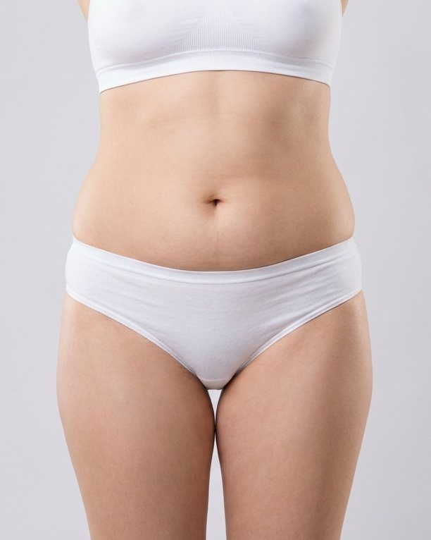
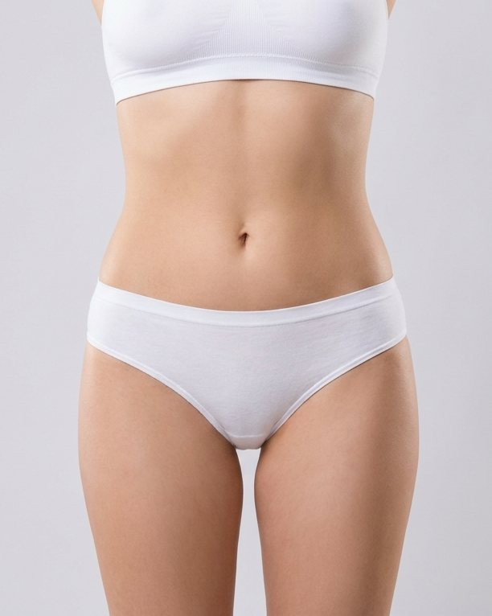
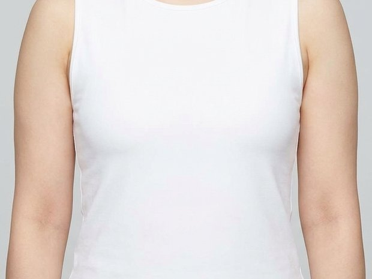
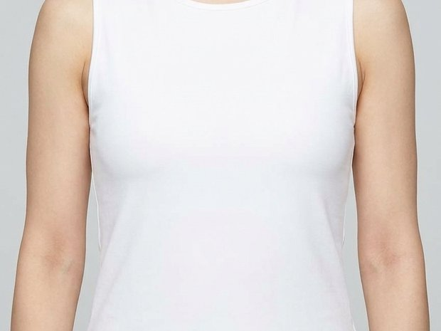
아프기만 한 지방분해주사를
언제까지 반복하시겠습니까?
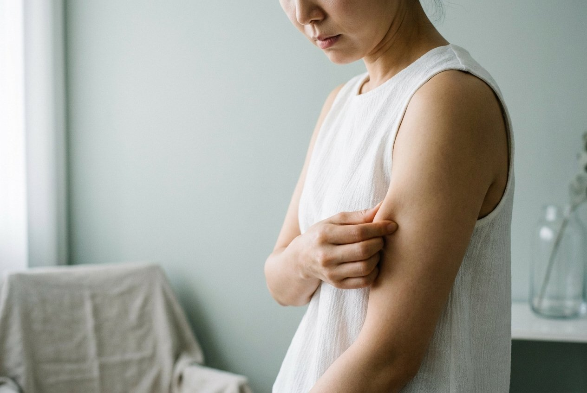
약물의 종류와 주입 방식이 정해지지 않은 상태에서 횟수만 늘리면, 통증과 멍은 쌓이지만 라인은 바뀌지 않습니다. 무엇을 어디에 어떤 압력으로 넣는지가 결과를 만듭니다.
식단을 함께 보지 않는 시술은
밑 빠진 독에 물 붓기입니다.
시술만으로 체지방이 정리되지는 않습니다. 식단이 관리되지 않으면 변화를 측정하는 것 자체가 어렵습니다. 관리 없이 시술만 반복하는 구조를 만들지 않는 이유입니다.
FIG B. WHY IT HAPPENS
약물 구성을 따지지 않았거나,
식단 관리를 함께 보지 않았기 때문입니다.
FIG C. FOUR PILLARS
올디테일 바디지우개 주사
INJECTION올디테일이 자체 구성한 지방분해 주사 처방입니다. 통증을 낮춘 조성으로 설계했습니다.
No 스테로이드No PPCNo 히알라제
※ 특허출원 관련 표기는 등록 서류 확인 후 반영합니다.
올디테일 바디온다
RF DEVICE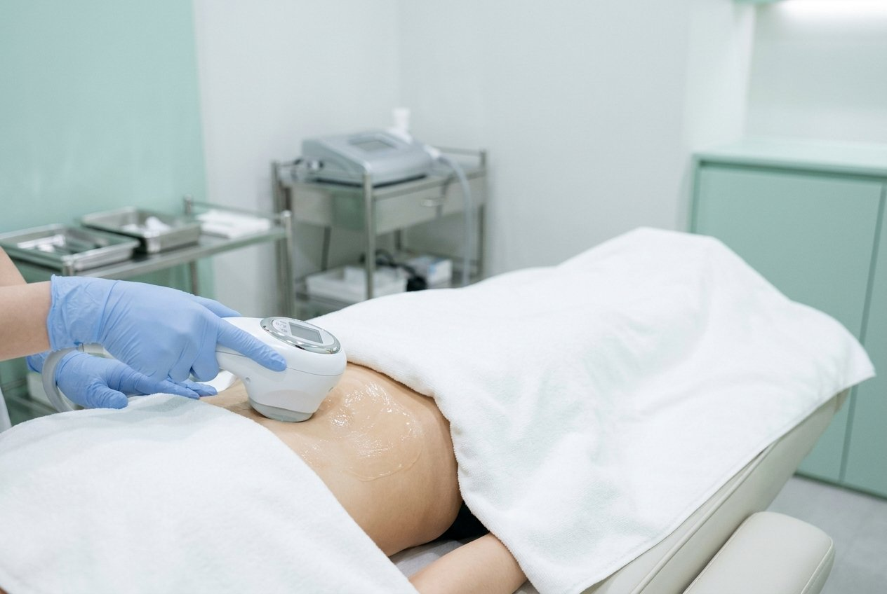
전자기파를 활용해 피부 아래 지방층에 열을 전달합니다. 주사만으로 다루기 어려운 넓은 면적과 탄력을 함께 봅니다.
올디테일 식단관리
DIET CARE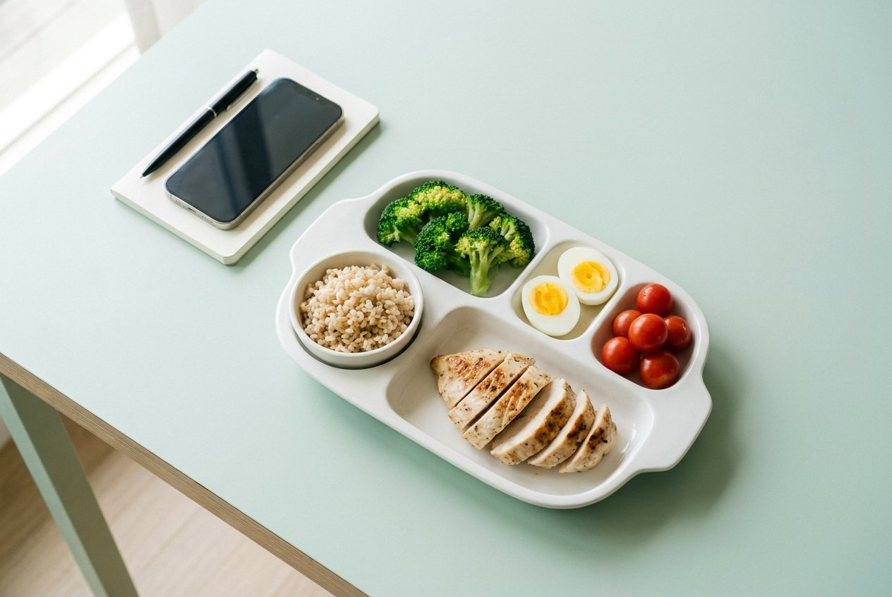
의사와 실장이 2:1로 매일 식단을 확인합니다. 무리한 제한보다 유지 가능한 기준을 함께 정합니다.
데일리 피드백2:1 밀착 관리
올디테일 약 케어
MEDICATION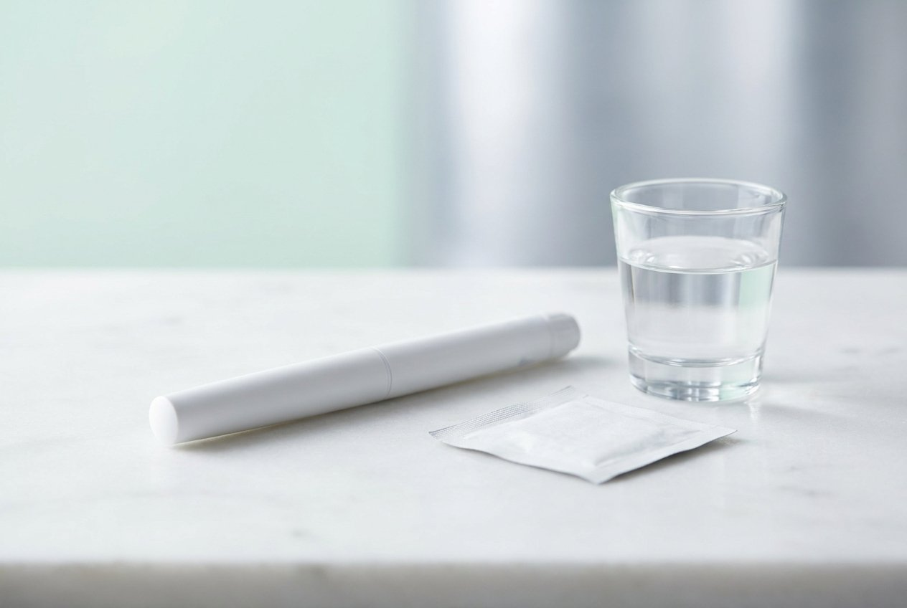
필요한 경우에만 대사 치료제를 병행하고, 용량과 부작용을 함께 관리합니다. 처방으로 끝내지 않습니다.
※ 처방 여부와 용량은 진료 후 의사 판단에 따릅니다.
하나만으로는 유지되지 않습니다.
올디테일 바디지우개는 네 가지를 함께 설계합니다.
FIG D. COMPARISON
FIG E. PROTOCOL · 진료 여정
계측
서 있는 자세에서 지방 두께 · 셀룰라이트 분포 · 처짐 각도를 확인합니다. 인바디 수치만 보지 않습니다.
원장 상담
부위별 강도 배분과 목표 라인을 함께 정합니다. 체중이 아니라 라인이 기준입니다.
라인 디자인
시술 전 부위를 표시합니다. 균일하게 넣는 것이 아니라 나누어 넣기 위한 단계입니다.
기기 자동 주입
일정한 압력과 깊이로 주입해 뭉침과 패임, 통증과 멍을 함께 줄입니다.
바디온다
지방이 빠진 자리의 탄력과 순환을 관리합니다.
2:1 데일리 케어
의사와 실장이 매일 식단을 확인합니다. 5주 뒤 다시 계측합니다.
FIG F. COMPOSITION · 구성 및 비용
바디지우개 주사
기기 자동 주입으로 부위별 강도를 나누어 배분합니다.
바디온다
빠진 자리의 탄력과 순환을 잡습니다.
대사 치료제
필요한 경우에만, 용량과 부작용을 관리하며 병행합니다.
식단 매니징
5주 프로그램 동안 매일 피드백합니다.
비용
부위 수와 회차, 약 처방 여부에 따라 달라지므로 상담 후 안내드립니다.
FIG G. RECOVERY · 회복 경과
당일
주입 부위의 미세한 부기, 일상생활 가능
2–3일
뭉침감, 멍이 생긴 경우 옅어짐
1–2주
부기가 정리되며 라인 변화
5주
프로그램 종료 시점 재계측
FIG H. CAUTIONS · 주의사항
— 시술 후 2–3일간 격한 운동과 음주는 피해주세요.
— 임신 · 수유 중, 간 · 신장 질환이 있는 경우, 특정 약물 복용 중에는 시술이 제한될 수 있습니다.
— 일시적인 부기 · 멍 · 뭉침이 나타날 수 있습니다.
— 대사 치료제를 병행하는 경우 소화기 증상 등이 나타날 수 있어 용량을 조정하며 진행합니다.
— 시술만으로 체중이 줄지는 않습니다. 식단 관리가 병행되어야 결과 측정이 가능합니다.
FIG I. FAQ · 자주 묻는 질문
Q몇 킬로그램 빠지나요?+
체중 감량을 보장하는 프로그램이 아닙니다. 목표는 부위별 라인이며, 변화는 계측으로 확인합니다.
Q주사가 아프지 않나요?+
기기로 압력을 일정하게 유지해 손 주사보다 통증과 멍이 줄어듭니다. 조성 자체도 통증을 낮추는 방향으로 구성했습니다.
Q부정 출혈이나 두근거림이 걱정됩니다.+
해당 증상은 특정 성분에서 보고됩니다. 올디테일 구성은 스테로이드 · PPC · 히알라제를 배제했고, 이상 반응이 있으면 즉시 구성을 조정합니다.
Q식단 관리는 어떻게 하나요?+
의사와 실장이 2:1로 매일 확인합니다. 무리한 제한보다 유지 가능한 기준을 함께 정합니다.
Q약 처방은 꼭 받아야 하나요?+
아닙니다. 필요한 경우에만 진료 후 판단하며, 원하지 않으시면 주사 · 바디온다 · 식단 관리로 구성합니다.